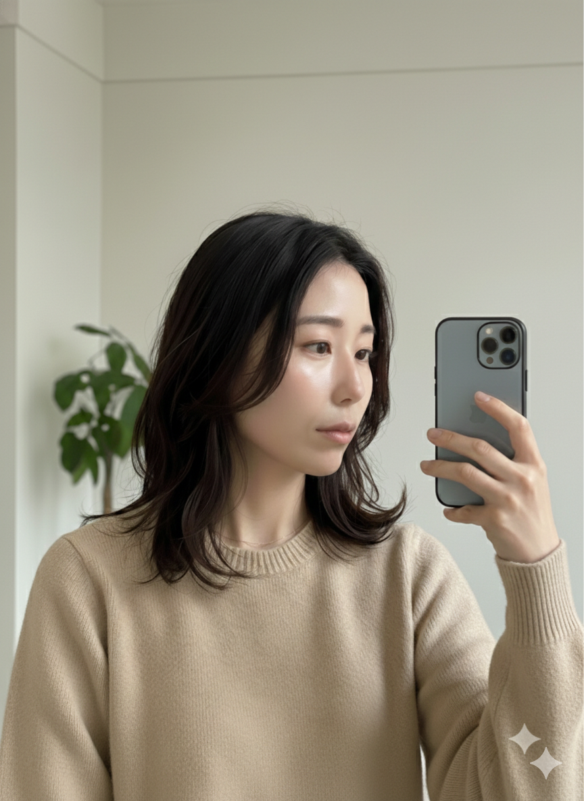
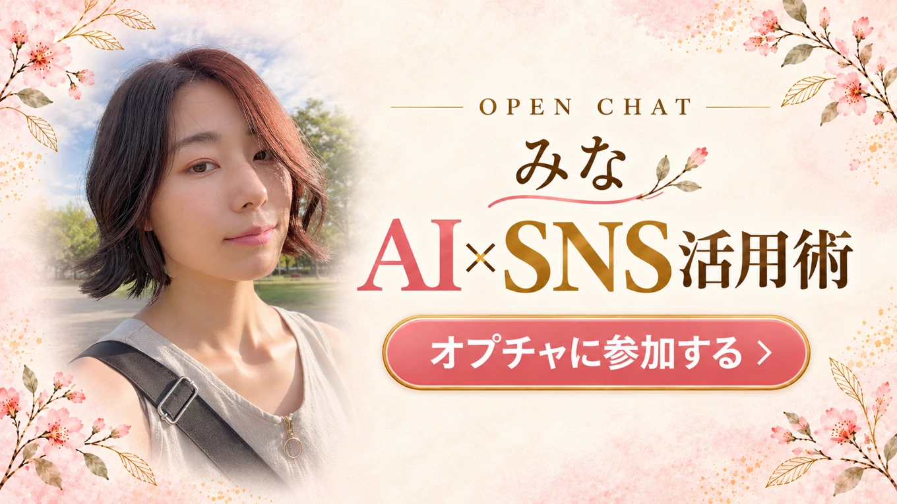

例：ホロライブの切り抜きルール
投稿できる素材
- 配信終了＋アーカイブ公開後
- 有料・限定公開は原則対象外。
個別に許可を得た場合は除く。
投稿時にやること
- 概要欄の冒頭に、
元動画のURLとタイトル - 切り抜き投稿者の
登録フォームを確認
やってはいけないこと
- Content IDに登録する
- 公式と誤解される見せ方
- 配信者や運営のイメージを損なう編集
削除の連絡が来たら
COVERからの連絡は
長い動画から、縦のショートを1本。使える素材の確認から切り抜き・字幕チェックまで。

AI×SNSで在宅収入を叶える主婦みな @mina_ai_fukugyoノウハウを凝縮した限定デジタルブック
公式LINEにお友だち登録していただいた方限定で
無料プレゼント中🎁
150万円の損失からようやく掴み取った、
「寝かしつけ後の30分が"収入を生む時間"に変わる実践マニュアル」を一冊に詰め込みました。
スーパーの買い物で値上げにため息。
毎月のやりくりがしんどい…
「子どもの将来の選択肢を
広げたい」でも、
働きに出るまとまった時間はない
在宅ワークに興味はあるけど、
特別なスキルがないから無理
だと思っている
物価は上がるのに、使えるお金は増えない。
変わりたいと願いつつ、忙しさに追われて
「何も変わらないまま1年が過ぎる」…
実はこれ、一番もったいない状態なんです。

専業主婦の頃は、自分の欲しいものを買うにも夫に遠慮して、つい我慢していました。
自分でも収入を作りたくて、物販やハンドメイド、ポスティングにも挑戦。
それでも、時間をかけた分だけ結果が出るわけではありませんでした。
AIも最初は、子どもの夜泣きを相談するくらい。
少しずつ使い方を覚えて、暮らしの合間にできる仕事を増やしました。
だから、これから始める人には、何をどの順番で進めるかが分かる形で届けたい。
今回は、使っていい動画を見分けるところから、AIで候補を出して、YouTubeショート投稿前に見直すところまでまとめました。
まずは使っていい動画を1本選んでみてね。
OPUSCLIP 4.0
STEP 1
「公開されている」と
「切り抜いて投稿できる」は別。
許可が確認できなければ、
自分で撮った動画で練習。
COVERからの連絡は
条件は配信者・運営ごとに違います。
STEP 2
リンクの場合は、URLを貼って動画の言語を選びます。
所有確認が出たら案内に沿って。
他の人の動画は本人と進める。
他の人の素材は、
AI利用も許可された
元ファイルのみ。
所有確認を避けるための無断ダウンロードはしません。
STEP 3
「Clipping」で縦9:16。
話がひとつ収まる長さで候補を生成。
STEP 4
最後に通して再生したら、YouTubeショートへ。
無料で試すなら
縦動画の書き出しに対応
無料版はアプリ内編集なし
候補動画をMP4で書き出す
無料は月60クレジット
直近90日間の有効な公開視聴回数
直近12か月間の有効な公開動画の総再生時間。ショートフィードは含まない
数字を満たしても審査があります。
切り抜き許可と、再利用されたコンテンツの収益化審査は別です。
公式ルールか、権利者の許可を確認できるまでは使わず、自分の元動画を使ってね。
日本語は公式ヘルプでベータ表記。名前・数字は音と見比べて確認。無料版で直せなければ他の候補に替えるか、書き出した動画を別の編集アプリで修正してください。
元動画の公式ルールと連絡内容を確認し、速やかに非公開・削除などの対応を。COVERの案内では連絡から7日以内です。
ここまで読んで、「切り抜きなら自分でもできそう！」と思ったかもしれません。
でも実は…
「切り抜きの作り方を知っていること」と
「実際に継続して稼げること」は全く別物
なんです。
ここでつまずいて、なかなか一歩を踏み出せない方も少なくありません🥺
私自身、過去に自己流で副業に手を出し、なんと150万円ものお金を失うという痛い経験をしています。
「私には才能がないんだ…」とお布団の中で一人泣いた夜は数え切れません。
そこから必死に試行錯誤し、ようやく見つけたのが「AIを賢く活用し、手堅くお家で収入を作るための『実践ノウハウと神テンプレート』」でした。
私と今のあなたの違いは、才能ではありません。「型を知っているかどうか、失敗を避けるコツを知っているかどうか」という部分が大きいと感じています。
👑 無料で今すぐ手に入る 👑
ノウハウを凝縮した限定デジタルブック
公式LINEにお友だち登録していただいた方限定で
無料プレゼント中🎁
150万円の損失からようやく掴み取った、
「寝かしつけ後の30分が"収入を生む時間"に変わる実践マニュアル」を一冊に詰め込みました。
※AIの進化に合わせて内容は今後アップデートする場合があります。
無料配布の内容・条件は予告なく変更されることがあります。
Instagramだけでは伝えきれない
無料オープンチャット「みな AI×SNS活用術」

画像をタップするとオープンチャットが開きます。